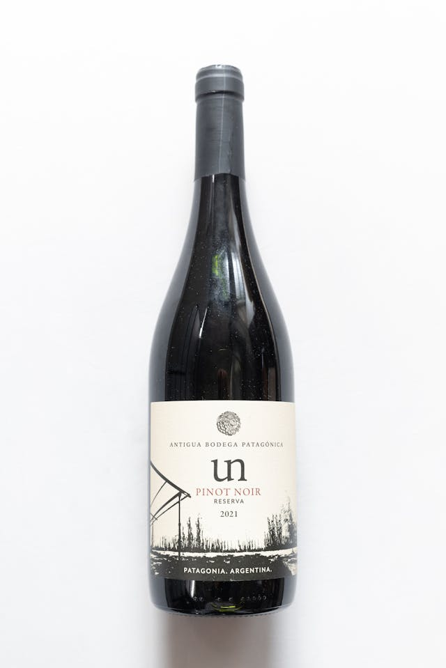
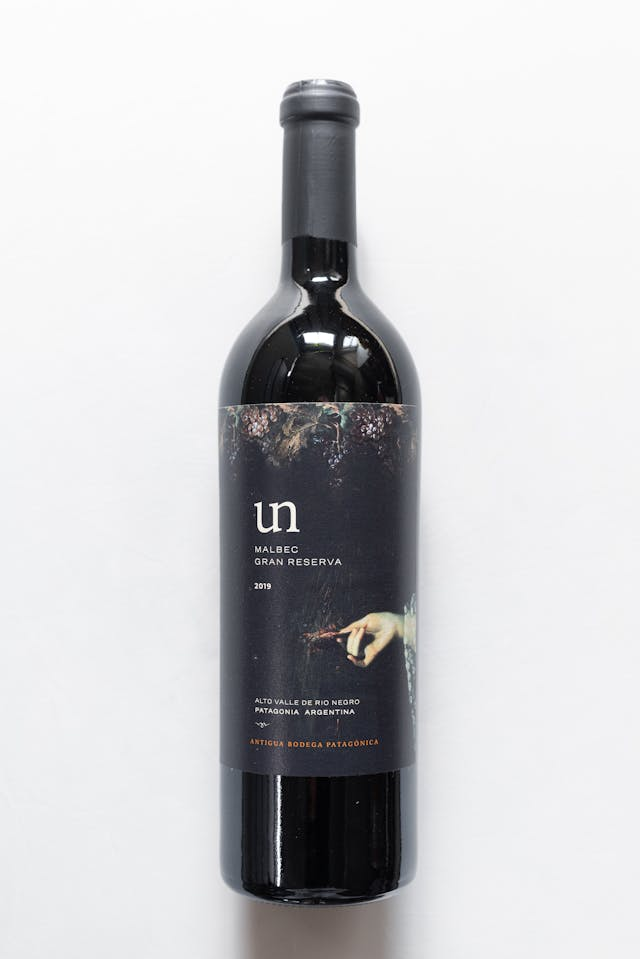
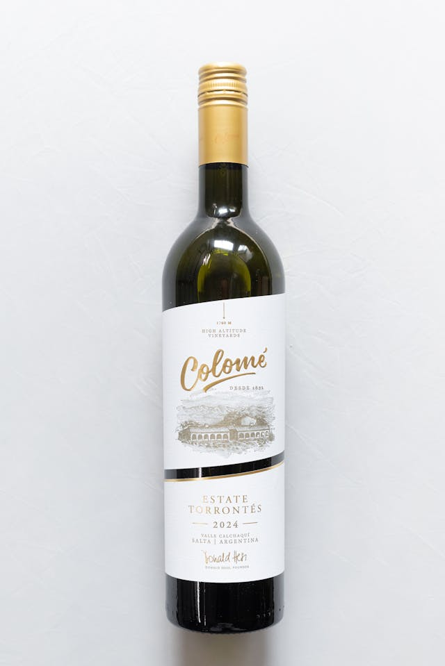
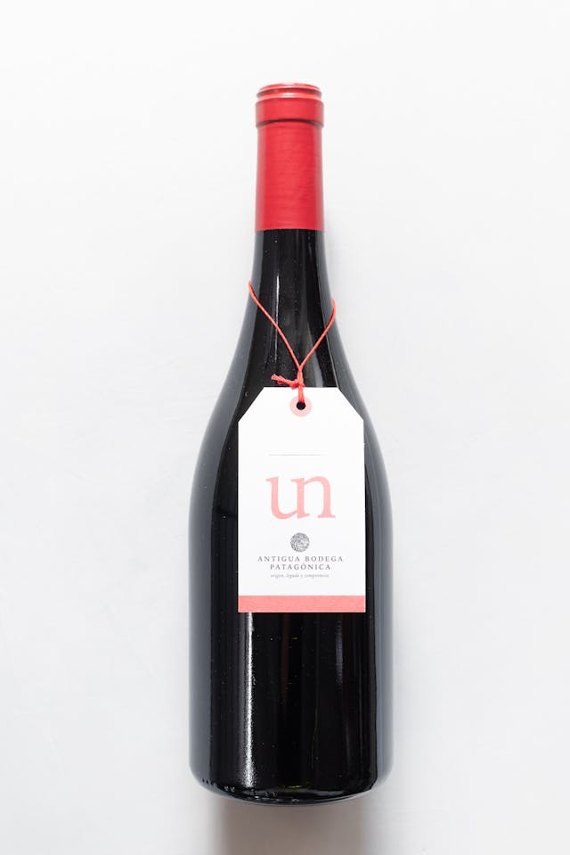
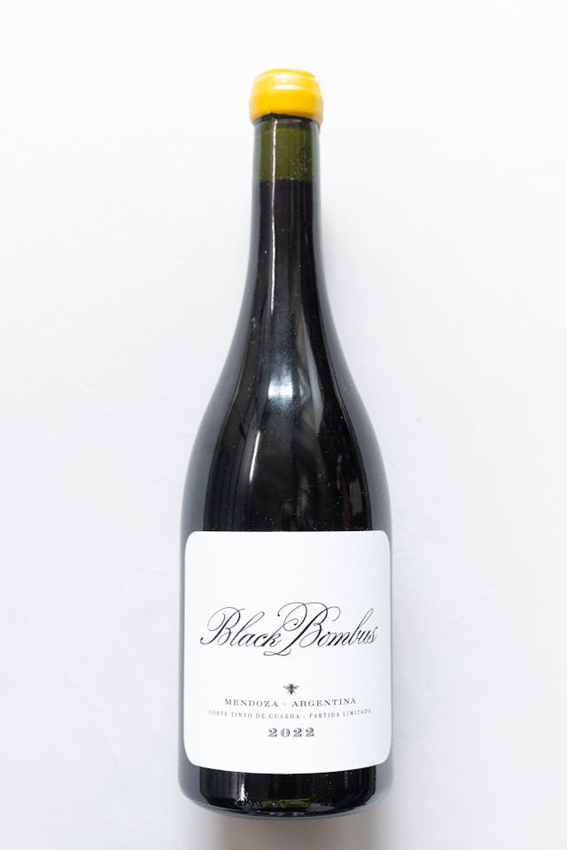
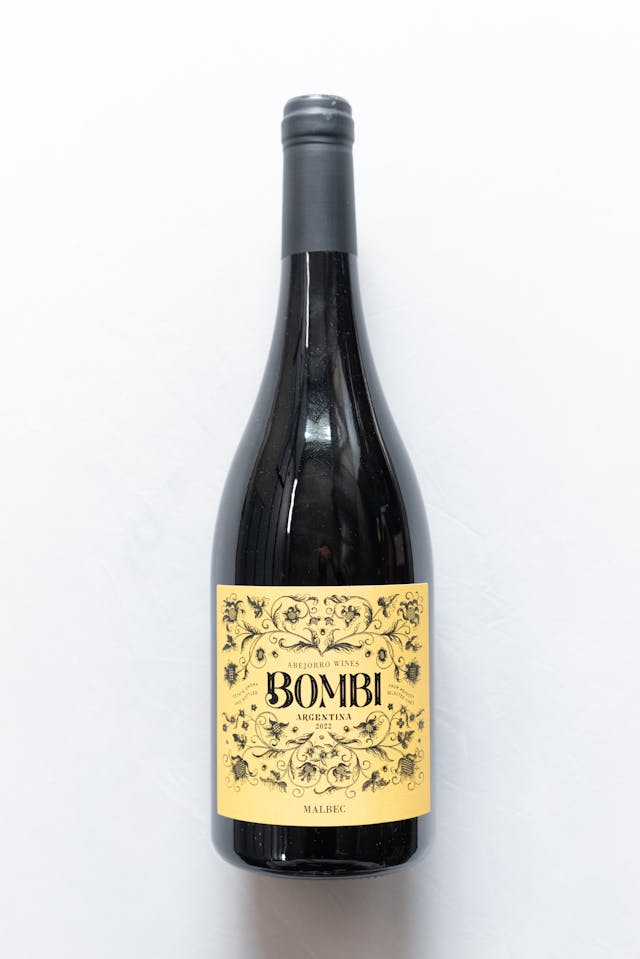
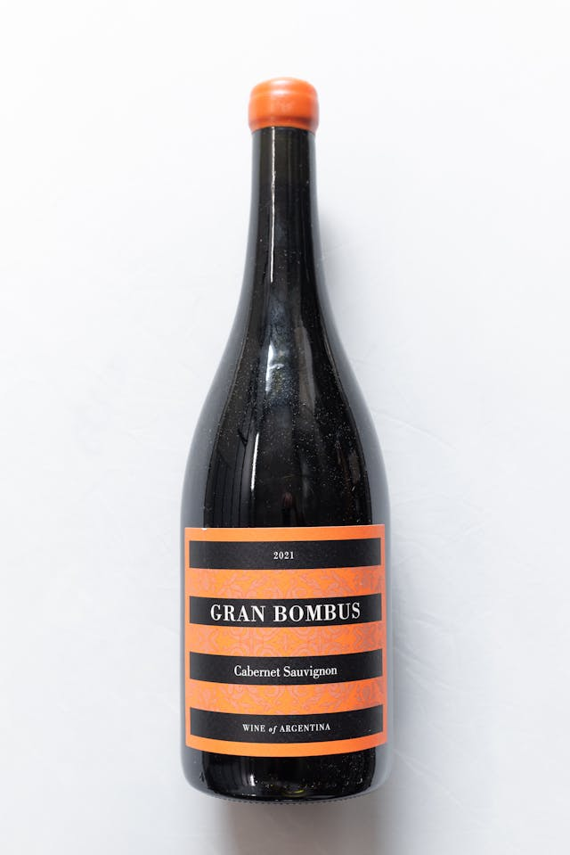
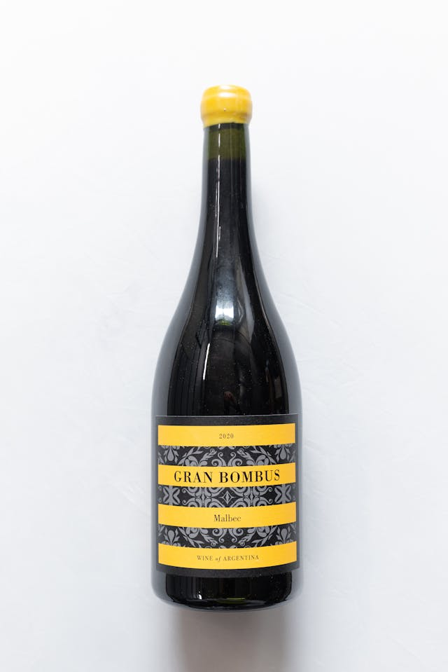

Crveno vino - 0,75 L
Cabernet Sauvignon Reserve
Berba: 2023
Vino duboke crvene boje i bogatog ukusa sa izraženim voćnim notama. Odličan izbor uz crveno meso i svečane večere.
1.490 RSD

Crveno vino - 0,75 L
Merlot Premium
Berba: 2022
Mekano i skladno vino prijatnog mirisa i punog ukusa. Idealno za porodična okupljanja i laganija jela.
1.390 RSD
Belo vino - 0,75 L
Chardonnay Classic
Berba: 2023
Svetle boje i osvežavajućeg voćnog mirisa. Lagano i pitko vino, savršeno uz ribu i lagana jela.
1.290 RSD

Crveno vino - 0,75 L
Prokupac Tradicija
Berba: 2021
Autentično domaće vino snažnog karaktera i bogatog ukusa. Odlično uz roštilj i tradicionalna jela.
1.590 RSD


Belo vino - 0,75 L
Tamjanika Aromatica
Berba: 2023
Sveže i voćno vino prijatne arome, lagano i osvežavajuće. Idealno za letnje dane.
1.250 RSD

Crveno vino - 0,75 L
Crveni Baron 2022
Berba: 2022
Vino intenzivne crvene boje i izraženog karaktera. Bogat i zaokružen ukus sa prijatnom toplinom čini ga odličnim izborom uz meso, roštilj i svečane večere.
1.550 RSD
Crveno vino - 0,75 L
Pinot Noir Elegance
Berba: 2023
Elegantno vino nežnijeg karaktera sa prijatnim voćnim notama. Savršeno uz piletinu i testeninu.
1.490 RSD

Crveno vino - 0,75 L
Reserve 2020
Berba: 2020
Tamno crveno vino duboke boje i bogatog, intenzivnog ukusa. Premium izbor za posebne prilike.
1.990 RSD


Tamjanika – Selektovana berba
Vino duboke crvene boje, bogatog i punog ukusa.
U njemu se prepliću note zrelog voća i blage začinske nijanse.
Prijatno i skladno, idealno uz crveno meso i zrele sireve.
1.490 RSD

Caraval Reserva – Specijalna selekcija
Izraženog mirisa i bogatog ukusa, sa notama tamnog voća i blagom toplinom. Elegantno i uravnoteženo vino koje se dugo pamti, savršeno za posebne trenutke.
1.990 RSD

Grand Reserva – Sveža berba
Svetle zlatne boje, osvežavajućeg i voćnog mirisa.
Lagano, prijatno i pitko vino.
Idealno uz ribu, lagana jela i opuštene letnje večeri.
1.350 RSD